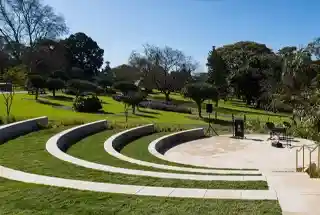

Chennai Metro Phase 2's Corridor 3, the roughly 20 km elevated line planned from Nehru Nagar to the Siruseri SIPCOT IT park along Old Mahabalipuram Road, now looks set to open closer to December 2026 than the June 2026 date originally floated for this stretch. Multiple 2026 property-market trackers covering the OMR corridor have pushed their expected opening window back by about six months, while the state's own messaging on Chennai Metro Phase 2 points to a broader 40 km of elevated corridors across the project being targeted for completion around March 2027. For the IT-corridor homebuying audience that has spent the better part of a decade hearing about an OMR metro line, this is a familiar story: real progress, on a schedule that keeps moving.
1. What Corridor 3 Actually Covers
Corridor 3 is one of three corridors under Chennai Metro Phase 2, and its OMR stretch runs through some of the IT corridor's busiest micro-markets, Sholinganallur, Navalur, Siruseri and the SIPCOT IT park itself. The line is designed to run elevated above a stretch of OMR that currently depends almost entirely on road transport, both private vehicles and the IT corridor's extensive private bus network, for the daily commute between residential clusters and the corridor's office campuses. A functioning metro line here would be a genuinely structural change to how this part of Chennai moves, not an incremental tweak.
2. The Slippage, and Why It's Not Surprising
An original target of around June 2026 for this stretch has not held, and the most recent tracking now points to a December 2026 window instead, itself not a confirmed date but the current best estimate from market observers following the project closely. This kind of slippage is consistent with the OMR metro's history: the line has been discussed, planned and partially re-planned for years, and the broader Phase 2 programme's 118.9 km scope, estimated at a project cost of roughly ₹63,246 crore according to the state government's own budget statements, is a large, multi-corridor undertaking where individual stretches routinely move against the master schedule.
- Six months of additional slippage on this specific stretch, from a June 2026 to a December 2026 working target.
- A separate, broader milestone, 40 km of Metro Phase 2 elevated corridors, is targeted for around March 2027, giving a sense of the overall programme's scale and pace.
- No official confirmation of either date was available at the time of writing; both should be treated as the current best public estimate, not a locked commitment from Chennai Metro Rail Limited.
3. What It Means for OMR Homebuyers
Metro connectivity is one of the more durable long-term value drivers for IT-corridor housing anywhere in India, and OMR is no exception. But a six-month slip on an already-delayed line is a useful reminder not to pay a present-day premium for a connectivity benefit that is still, by the most optimistic current estimate, over a year away. For buyers evaluating projects along this specific stretch, several developments sit within the corridor's broader catchment, including Sobha Wisteria in Egattur, Godrej Azure in Padur, and Radiance Edgewood in Navalur. Each of these projects currently markets its connectivity primarily on existing road access and the IT corridor's established private transport network, which remains the dependable baseline regardless of when the metro eventually opens.
If you're specifically weighing a metro-adjacent purchase, the practical steps are the same ones that apply to any infrastructure-linked decision: confirm the project's actual walking or driving distance to the nearest planned station rather than relying on corridor-level marketing language, ask the developer or your advisor for the current official CMRL timeline rather than a third-party estimate, and treat the eventual opening as a bonus to a purchase decision that should already make sense on the project's own fundamentals, location, builder track record, pricing and RERA status, without the metro.
4. The Pattern Worth Watching
OMR's metro story has moved in fits and starts for years, and this latest six-month slippage fits that pattern rather than breaking it. What has changed is that Chennai Metro Phase 2 is now visibly under construction in multiple places along the corridor, rather than existing only on planning documents, which is itself a meaningfully different stage from where this project stood even two or three years ago. For homebuyers with a multi-year horizon, that's the more important signal: the corridor is moving, even if the specific opening date keeps shifting.
The Bottom Line
Corridor 3's push from a June to a December 2026 target is one more data point in OMR's long-running metro story, genuine progress, but on a schedule that keeps sliding. For buyers along this stretch, the right approach is to track the construction milestones directly rather than anchor a purchase decision to any single opening date, and to keep weighing projects like Sobha Wisteria, Godrej Azure and Radiance Edgewood on their existing fundamentals first. Talk to our team for a current read on which OMR micro-markets are best positioned as this corridor's infrastructure actually lands.